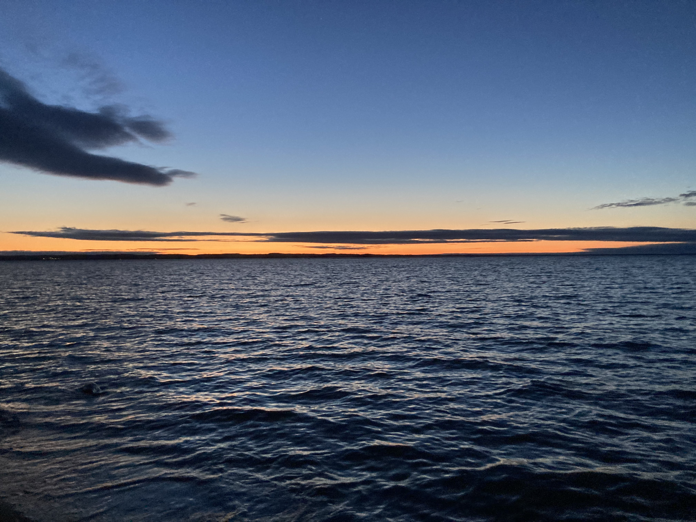
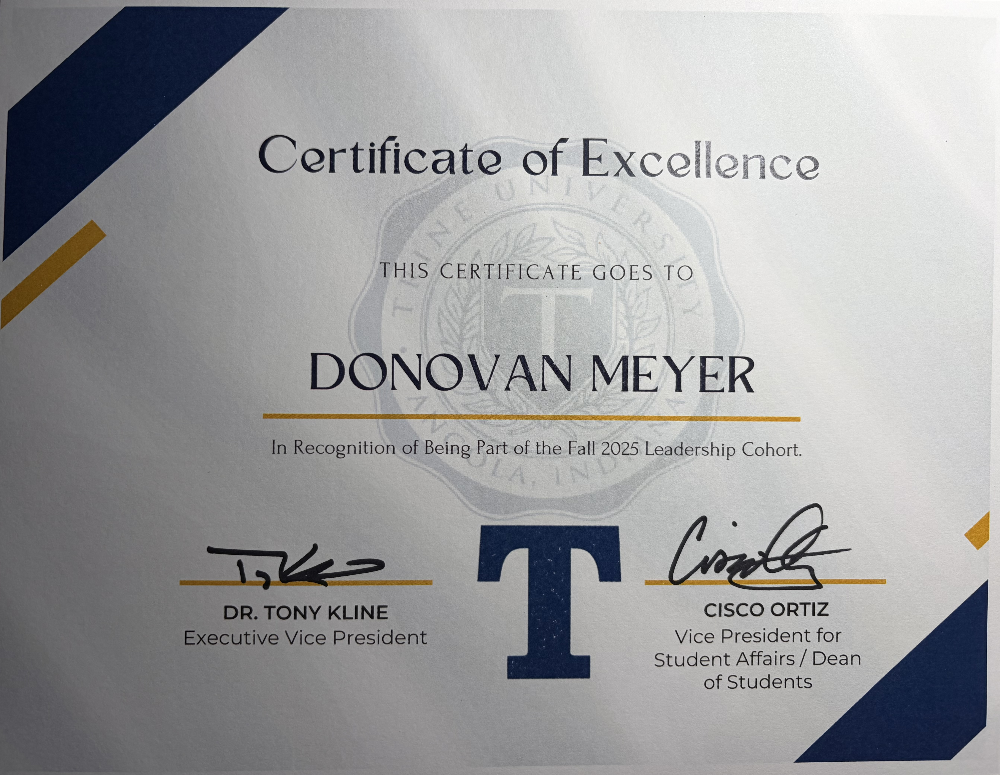

Portfolio
Pre-med Student-Athlete at Trine University
Donovan Meyer
Dedicated to excellence in academics, athletics, and future medical practice.
At a Glance
Mission Statement
Purpose with conviction.
I will boldly explore new challenges, seek logical solutions, and pursue wisdom so I can share it with others. Through this growth, I serve with wisdom, sacrifice, and care — building a lasting legacy of meaningful contribution.
About Me
Focused on growth, service, and sustained excellence.
Who I Am
I am Donovan Meyer, a Biology major at Trine University pursuing both pre-med and pre-physical therapy pathways. I am committed to building a future in healthcare grounded in academic excellence, service, and the ability to lead and collaborate effectively in demanding environments.
What Drives Me
My goals are shaped by discipline, accountability, and a commitment to continual improvement. Whether I am studying, training, mentoring, or serving others, I aim to lead with professionalism, strong character, and purpose.
Where I’m From
I am from Traverse City, Michigan, one of the most beautiful places in the world. Of course, it's not as beautiful when you have to shovel snow for 6 months out of the year, but I love it nonetheless.
Personal Interests
Outside of academics and athletics, I love listening to music and creating it through playing the guitar, singing, and learning the harmonica. I also enjoy movies, reading, and all sorts of outdoor activities with my family and friends, which help me stay curious, reflective, and well-rounded.

A photo I took at Mission Point, off Lake Michigan in Grand Traverse Bay, capturing one of the sunsets we get in northern Michigan.
Future Goals
Preparing for long-term impact in healthcare.
Professional Direction
I plan to pursue a career in orthopedic surgery, building on my interests in medicine, performance, recovery, and long-term patient care.
Current Opportunities
I am currently seeking entry-level clinical or patient-facing opportunities that will allow me to continue developing practical experience, professional judgment, and strong patient-centered communication.
Academics
Academic excellence within a rigorous pre-health path.
Biology at Trine University
My academic foundation is rooted in Biology, where I am developing the scientific knowledge, analytical thinking, and discipline required for advanced study and a future in healthcare.
Pre-Med & Pre-PT Preparation
I am intentionally preparing for both medical and physical therapy pathways through rigorous coursework, long-term professional focus, and a strong commitment to meaningful patient-centered work.
4.0 GPA
Maintaining a 4.0 GPA reflects the consistency, discipline, and time management I bring to every responsibility, even within a highly demanding schedule.
Accelerated Graduation
I am completing a 3-year accelerated graduation plan, demonstrating the focus, adaptability, and work ethic required to excel under significant academic demands.
Athletics
Competing as a student-athlete while building leadership and resilience.
Baseball and Leadership
As a member of the Trine University baseball team, I continue to grow as a leader, teammate, and competitor in high-pressure environments. Athletics has sharpened my accountability, resilience, and ability to contribute to a shared standard of excellence.
Balance Through Discipline
Being a student-athlete requires discipline across every area of life. The habits I have built through training, preparation, and competition directly support my academic performance, communication skills, and long-term professional goals.
Volunteer Experience
Service centered on mentorship, trust, and positive impact.
Big Brothers Big Sisters
Through Big Brothers Big Sisters, I mentored an elementary student in weekly sessions focused on academic support, goal setting, and building a strong, trusting relationship. This experience strengthened my communication, patience, and leadership while reinforcing the importance of consistency and service.
Work Experience
Professional experience shaped by responsibility, teamwork, and initiative.
Sales Representative, Cutco
In fall 2025, I generated $3,244 in sales over three months through online product demonstrations and personalized customer consultations while balancing academics and baseball. The role strengthened my communication, professionalism, and ability to build trust, solve problems, and perform in a competitive environment.
Part-Time Dock Worker, Tri-State Docks
At Tri-State Docks in Angola, Indiana, I perform dock installation, maintenance, and storage in a physically demanding outdoor setting. The work has reinforced my reliability, attention to detail, and ability to work efficiently with a team to meet expectations and maintain quality standards.
Hospital Job Shadowing
I completed eight hours of hospital shadowing focused on direct patient care, clinical workflows, and the collaboration of interprofessional healthcare teams. The experience strengthened my understanding of professional communication, patient-centered care, and the daily responsibilities of physicians and physical therapists.
Campus Involvement
Invested in academic, leadership, and campus communities.
Trine Honors Program
As a student in the Trine Honors Program, I am part of a high-achieving academic community that values scholarship, discipline, and intellectual growth. The program strengthens my commitment to high standards, thoughtful leadership, and continued academic development.
Tri-Beta Biological Honor Society
I am a member of Beta Beta Beta, the Biological Honor Society, where I attend chapter meetings centered on biological research, scholarship, and professional development. This involvement supports my growth as a science student and reinforces my long-term commitment to healthcare and lifelong learning.
Leadership Cohort
In Trine University’s Leadership Cohort, I participated in conversations about the meaning of leadership, including discussion with University President Tony Kline. This experience strengthened my perspective on leadership, accountability, service, and the responsibility that comes with influencing others well.

Recognition from Trine University for participation in the Fall 2025 Leadership Cohort.
Honors & Achievements
Recognized for academic excellence, leadership potential, and long-term purpose.
Academic Distinction
I maintain a 4.0 GPA as a Biology major while completing a rigorous 3-year accelerated graduation plan at Trine University and am currently on the President's List. This achievement reflects a sustained commitment to discipline, focus, and excellence across demanding priorities.
Phi Eta Sigma National Honor Society
I was inducted into Phi Eta Sigma in recognition of academic excellence and ranking within the upper 20% of the freshman class. The honor reflects both strong academic performance and a consistent commitment to scholarship and personal standards.
Congress of Future Medical Leaders
I participated in the Congress of Future Medical Leaders, a national program that included live surgery observation, presentations from medical leaders, and networking with future healthcare professionals. It expanded my perspective on leadership, innovation, and the standards of excellence required in medicine.
National Honor Society Scholarship
Receiving the National Honor Society Scholarship recognized my academic achievement, character, and leadership potential. It represents a meaningful affirmation of the values that continue to guide my academic and professional path.
Skills
Practical strengths for science, communication, and high performance.
Scientific & Technical Skills
My background includes basic lab skills and coursework aligned with Biology, pre-med, and pre-physical therapy preparation. I also completed Chegg Skills: AI in STEM, strengthening my ability to apply emerging technology concepts within scientific and technical contexts.
Professional Tools
I am proficient in Microsoft Office and familiar with Google Workspace for academic, organizational, and collaborative work. These tools support clear communication, strong organization, and effective collaboration across academic and professional settings.
Transferable Strengths
Through academics, athletics, sales, and service, I have developed strong time management, teamwork, and communication skills. These strengths allow me to lead by example, contribute effectively under pressure, and remain focused on long-term goals.
Contact
Let’s connect.
I welcome opportunities to connect about academics, athletics, leadership, healthcare career goals, and professional growth. You can reach me by email or phone.
Traverse City, Michigan
231-357-6168
drmeyer25@icloud.com